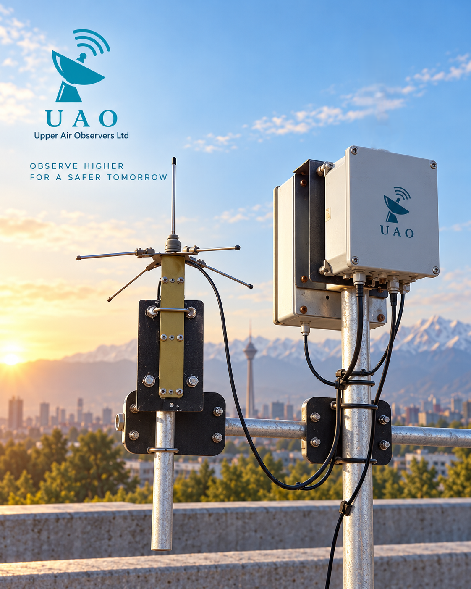

GROUND-STATION HARDWARE
Ground-station hardware
Portable and fixed receiving hardware for field operations and permanent installations.

GROUND-STATION HARDWARE
Portable and fixed receiving hardware for operational upper-air sounding
The Upper Air Observers ground-station hardware includes the receiving antenna, receiver electronics, GPS antenna and a dedicated ground-check box for pre-launch verification. It is available as a portable field configuration and as a fixed receiving installation.
01Ground checkVerify radiosonde operation before launch using the ground-check box
02Receive & trackCapture DigiSonde telemetry and track the ascent in real time
03Operate in field or fixed modeDeploy as a rugged portable station or as a permanent receiving installation


GROUND-STATION SPECIFICATIONS
Key operational specifications
Main technical points for the receiving hardware and its pre-launch support functions.
System overview
You can edit the values later directly in the table cells below.
| Metric | Value |
|---|---|
| System configuration | Portable field station and fixed receiving installation |
| Receiving frequency range | 400–406 MHz |
| Operational range | Up to 150 km |
| Included modules | Receiving antenna, receiver electronics, GPS antenna, ground-check box |
| Ground-check function | Pre-launch verification of radiosonde operation and link integrity |